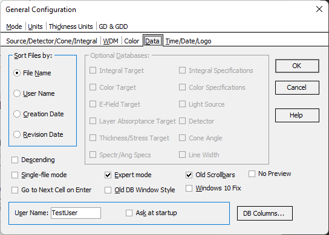

Sorting Order, User Name, and Database view options
Sorting Order, User Name, and Database view options
Navigation: OptiLayer Menu Commands > Configuration Menu >
Sorting Order, User Name, and Database view options
` <filter_specifications_options.html>`__ ` <idh_menu_configuration.html>`__ ` <idh_user_name.html>`__
When the contents of any database are displayed, the files in this database may be sorted by File Name, User Name, Creation Date, or Revision Date. This Configuration Option allows you to choose a sorting order.
You can also set the inverse order by checking the box labeled “Inverse Order.” This dialog also allows you to change the User Name during the OptiLayer session or when the dialog for Setting User Name has been disabled. You can restore the appearance of the Setting User Name dialog at startup by checking the “Ask at startup” checkbox.
An additional convenience feature is the “Go to Next Cell on Enter” option. If it is active, pressing the Enter key during spreadsheet editing moves the focus to the next editable cell automatically.
The “Single-file mode” checkbox activates the corresponding SF Mode, which allows you to store all OptiLayer data and settings in a single file with the extension .olproj.
The “Expert mode” activates all databases and most of the advanced OptiLayer commands (with the exception of Scientific commands). If the Expert mode is not active, it is possible to control the visibility of particular databases manually, arranging the user interface according to current needs.
The “Old scrollbars” checkbox activates the use of old (classical) scrollbar style everywhere in OptiLayer. “Old DB Style” activates the view of the database window based on tabs below the database file list. The new style uses a tree view list of the databases in the left part of the Database window.
The “Windows 10 Fix” option removes the gaps between windows in Windows 10/11 OS when tiling of windows is applied or when windows are moved on the screen with a mouse. “No Preview” allows you to completely hide and disable the Database Preview subwindow, which can be necessary on small screens. The “DB Columns” button opens the Configure Database Columns dialog.
